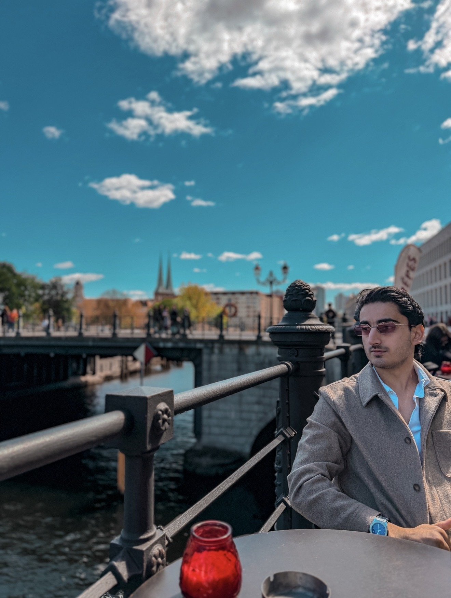
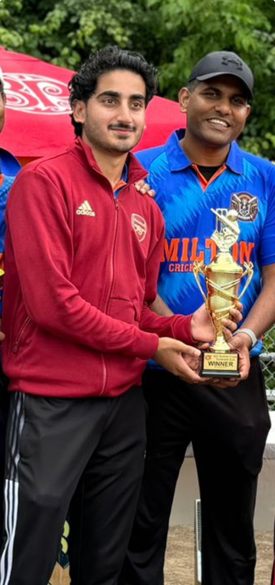
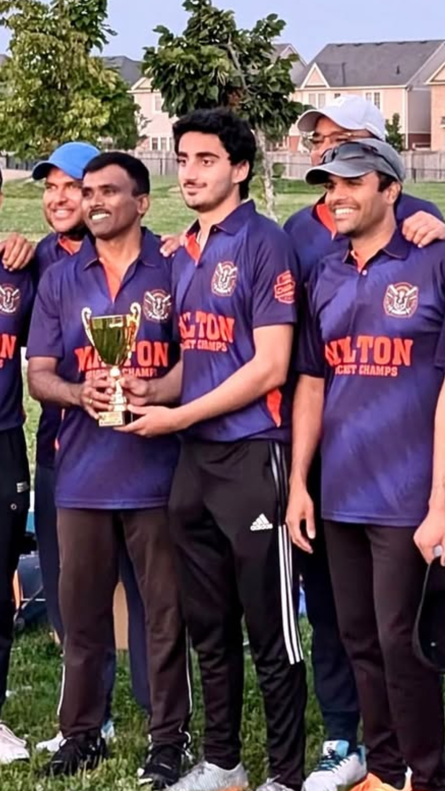

THE PERSON BEHIND THE PROJECTS
A little about me.
I'm a fourth-year Computer Science student at the University of Guelph. Alongside building software, I've spent years learning how people, systems and operations work together.
From coordinating grocery operations to developing applications and working on university research, I've learned that useful technology starts with understanding the actual problem. That perspective shapes what I build and the teams I want to join.

A few things that shape my work.
Two perspectives. One approach.
Technical curiosity paired with responsibility for outcomes in busy, people-facing environments.
More than a résumé.
Cricket has been a big part of my life. Playing and working with a team has taught me discipline, resilience, and how to make decisions under pressure.



I also enjoy discovering how good software is designed and how small decisions about usability, feedback and clarity can make a real difference.
Interested in what I'm building?
You can explore my work on GitHub, or reach out to talk about software engineering, business systems, and technology opportunities.